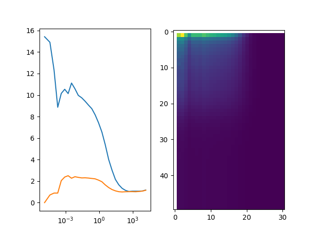

Note
Click here to download the full example code
Count rate filtered correlation - 2¶
Scan count rate filter and compute stack of correlation functions for different mean count rates in time windows. Potential application: filter aggregates, see also PAID correlation (Laurence???)
Low count rate regions of a TTTR file can be discriminated. The example below displays the correlation analysis of a single molecule FRET experiment. Note, the background has a significant contribution to the unfiltered correlation function. The example uses a sliding time-window (TW). TWs with less than a certain amount of photons are discriminated by the selection.
Such a filter can be used to remove the background in a single-molecule experiment that decreased the correlation amplitude.

import pylab as p
import tttrlib
import numpy as np
# Read the data data
data = tttrlib.TTTR('../../test/data/bh/bh_spc132.spc', 'SPC-130')
fig, ax = p.subplots(nrows=1, ncols=2)
correlator = tttrlib.Correlator(
tttr=data,
n_bins=1,
n_casc=30,
channels=([0], [8]), # green correlation
)
# Plot the raw/unfiltered correlations
ax[0].semilogx(
correlator.x_axis,
correlator.correlation
)
correlator = tttrlib.Correlator(
tttr=data,
n_bins=1,
n_casc=30,
channels=([0, 8], [1, 9]), # green-red correlation
)
ax[0].semilogx(
correlator.x_axis,
correlator.correlation
)
# This is a selection where at most 60 photons in any time window of
# 10 ms are allowed
filter_options = {
'n_ph_max': 60,
'time_window': 10.0e6, # = 10 ms (macro_time_resolution is in ns)
'time': data.macro_times,
'macro_time_calibration': data.header.macro_time_resolution,
'invert': True # set invert to True to select TW with more than 60 ph
}
correlations = list()
for tw in np.linspace(0.1e6, 50.0e6, 50):
filter_options['time_window'] = tw
correlator = tttrlib.Correlator(
n_bins=1,
n_casc=30,
channels=([0], [8]),
tttr=data[tttrlib.selection_by_count_rate(**filter_options)]
)
correlations.append(correlator.correlation)
p.imshow(np.array(correlations))
p.show()
Total running time of the script: ( 0 minutes 1.516 seconds)